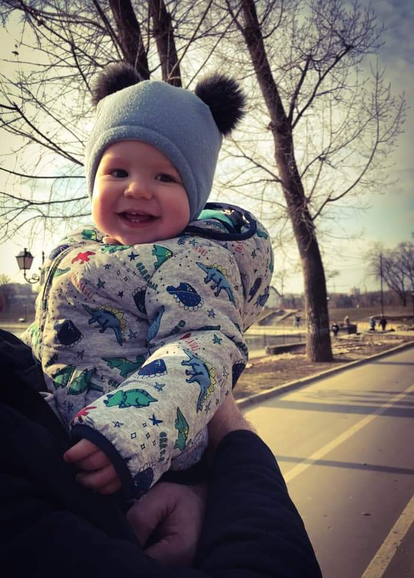

Acasă |
Filmele/ Serialele preferate |
Cărțile preferate |
Destinații de vis |
CATRANIUC ELENAMă numesc Elena Catraniuc , sunt eleva în clasa a-11-a, în L.T. ,,Dante Alighieri”. M-am nascut în Republica Moldova, Chișinău , în cel mai călduros anotimp ,vara , la data 03.06.2004, am 17 ani. Sunt o fată comunicabilă, ambițioasă , iubesc sa-mi petrec |
|  |
timpul liber cu familia, în special cu nepotul meu Bogdan sau cu prietenii. Îmi place să citesc cărți, romane de dragoste sau detectiv ,îmi place să vizionez filme sau seriale și să ascult muzică. |